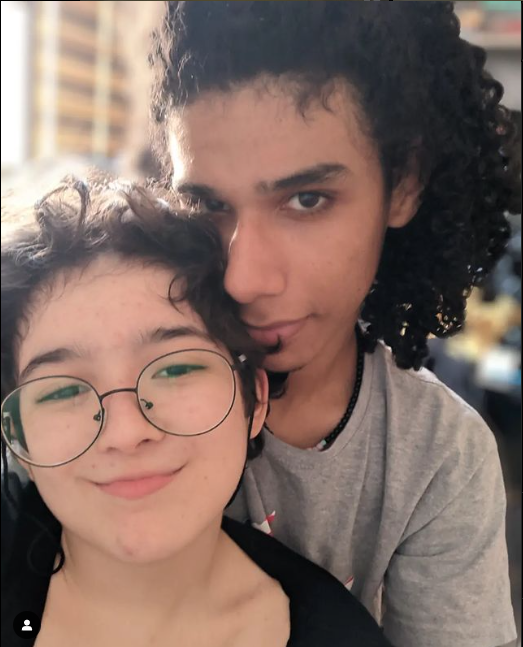

Falando sobre nosso amor
Se por te beijar tivesse que ir depois para o inferno, eu faria isso. Assim poderei me gabar aos demônios de ter estado no paraíso sem nunca entrar.
Nosso amor começou de uma maneira repentina e um tanto quanto turbulenta. Ambos éramos menores que 18
anos e tínhamos muitas limitações por nossos pais (não que hoje não temos). Você não podia namorar e
nunca tinha namorado, portanto foi bastante difícil conseguirmos com que sua mãe e seu pai te
permitissem tal coisa.
Com essa dificuldade em mente e com todos esses problemas, ainda (talvez de forma imatura)
prosseguimos, mas o que importa é que, mesmo com tudo isso, conseguimos fazer funcionar.
Dois adolescentes que mal saíram o Ensino Fundamental namorando. Dois adolescentes com basicamente 0
experiência de relacionamento e ainda assim, construímos uma relação de tanto tempo.
Proponho-te um teste: Pegue todos os problemas que temos, todos, e então, compare com os problemas de uma grande maioria de adultos. Eu tenho certeza que teremos um relacionamento mais saudável do que o deles em 90% dos casos.
Ocorreu entre a gente um efeito um tanto quanto esquisito, pois sequer sei como explicar corretamente. O ponto é que eu nunca tinha sido uma pessoa que buscava tanto compreender os outros quanto eu fui com você. Eu costumava só julgar, criar minha opinião ruim (que na verdade eram externalizações dos meus próprios traumas) e deixar por isso mesmo, mas com você foi diferente.
Com você eu aprendi, verdadeiramente, como era de fato, me colocar no lugar do outro. Foi ao seu lado que eu comecei a entender como pequenas ações podem fazer uma imensa diferença, tanto para o lado negativo, quanto para o positivo.
Quando te conheci, eu tinha problemas com transgêneros e outras minorias. Claramente, não no sentido de odiá-las mas que era como "para os outros, não me importo, agora comigo? Jamais", mas o amor que você fez eu sentir por você mudou tudo isso. Graças ao meu empenho em ser melhor ao seu lado, eu consegui ser melhor comigo mesmo, com você e com o mundo.
Lembro até hoje do dia, bem no início do relacionamento, que você me disse que achava que na verdade não era uma mulher e eu fiquei extremamente magoado. Me senti muito mal e tinha certeza que teríamos de terminar tudo aquilo que estávamos começando a construir porque, afinal, "eu era hétero".
Na mesma noite ou na noite seguinte, eu sonhei que tinha visto você e lá, você não era uma mulher. Nesse sonho, ao te avistar, senti-me raptado por uma imensa onda de amor e, ali, eu tive certeza que tanto faria qualquer gênero ou sexualidade que você viesse a tomar por se entender, eu não tinha como parar de querer estar ao seu lado e te amar.
Um dia sua mãe finalmente te deixou namorar e eu fui na sua casa e entrei nela, de fato, a primeira vez. A partir dali iniciou-se um período incrível que, na verdade, já vinha acontecendo e, eu nunca vou esquecer como apesar de tantas barreiras, a gente sempre lutou contra tudo junto.
Aqui nesse final, gostaria de elencar três situações: Momentos-Ponto de demonstração (basicamente situações específicas que eu tentei mostrar para você o quanto eu te amo, ou seja, serão eventos pontuais), Momentos-Cotidiano (que é o dia a dia) e Momentos-Orgulho (momentos que você me fez me orgulhar de você).
Momentos-Ponto
Momentos-Cotidiano
Momentos-Orgulho
Como você me ajudou a me entender?
É fato que eu não seria a mesma pessoa se não tivesse te conhecido. Ter tido você, de longe não foi apenas uma experiência amorosa. Você me ajudou em coisas que nenhuma outra pessoa tinha jamais me ajudado.
Você me amou de jeitos que eu realmente não tinha sido amado jamais, pois até mesmo todas as pessoas que eu considerei melhor amigo durante a vida, falharam em estarem comigo de verdade durante os momentos. Você não foi assim. Você realmente esteve lá por mim, sempre, e se hoje eu não me odeio totalmente, é porque teve uma pessoa (você) que se propôs a me amar.
Há uma consideravel chance que, caso eu não tivesse conhecido você, jamais viesse a entender minhas questões sobre transgeneridade. Você foi um ponto-chave nessa descoberta e eu tenho certeza que tinha que ser você. Qualquer outra pessoa que eu conhecesse não teria tido o mesmo peso que você teve para mim.
Eu consegui me aceitar muito melhor pelo fato de que você me aceitou e se houve um dia que eu pude dizer "Talvez haja uma Agatha", é porque um dia eu senti, com base no que você fez, que "Havia um Eduardo". Serei eternamente grato por tudo que você fez.
Ontem eu falei sobre você ter me ajudado a perceber que existia uma "Agatha dentro de mim" e bom, a história é basicamente a seguinte: Teve um dia, que eu te contei inclusive, que eu olhei para o desenho que você fez de mim e chorei, relacionando até com a história da Madame Xanadu.
O que eu comecei a sentir foi que, é como se existisse dois eus em mim. Um deles é o Eduardo e o outro é a Agatha. A Agatha só vem para passear e não vive o cotidiano em si. Ela aparece aí em algumas festas, em alguns momentos mais divertidos. O Eduardo é aquele que cuida dos momentos em que a Agatha não está.
O Eduardo é imensamente mais inseguro. O Eduardo não acredita em si mesmo, tem falta de vontade de falar com todo mundo e sente inveja de todo mundo. Agora a Agatha? Não, a Agatha é imensuravelmente diferente.
A Agatha sabe cantar e gosta de cantar. Fica implícito o "perto de pessoas" pois não existe o "longe de pessoas" para a Agatha, porque para ela, não há necessidade de isolar como o Eduardo sempre quer fazer.
A Agatha não sente medo e se sente, é embutido por resquícios do Eduardo. O que a Agatha quer é viver, fazer coisas que o Eduardo normalmente teria medo de fazer. A Agatha tem autoestima, a Agatha não sente repúdio ou tédio ao se ver no espelho. A Agatha quer tirar fotos e gravar momentos diferentemente do Eduardo que nunca quer chegar perto de uma câmera.
A Agatha não tem medo de se mostrar e a Agatha odeia esconder o corpo. O que, claro, o Eduardo ama fazer.
Eu não sei exatamente o que fazer com tudo isso, mas eu não tenho um problema psiquiátrico desse tipo. O que quero dizer é que, não existem dois eus em mim. Não tenho problemas de "várias personalidades". E por isso, tenho de admitir para mim mesmo que A Agatha querer tantas coisas e o Eduardo não, signifique alguma coisa. Mas isso é algo que eu preciso lidar com o tempo.
Isso foi uma exemplificação de tudo que você me fez sentir e de tudo que você me fez entender. Eu nunca seria capaz de ter alguma coisa como isso se você não tivesse aparecido na minha vida.
Obrigado.
Poemas e outros
Nessa seção vou deixar alguns áudios, poemas, músicas, qualquer coisa que me lembre de você ou que eu queira dedicar a você. Os áudios que colocarei aqui foram gravados por mim, portanto se estiverem ruins, já sabe. Além disso, em alguns momentos a guitarra parava de funcionar e ficava só a voz. (Já sei que algumas partes estão desafinadas, mas havia pressa).
A música que eu mais lembro de você:
Isso é obviamente uma brincadeira, asuhasuh
Se imagino a gente não junto:
Quando penso sobre a gente ficar junto pra sempre:
Quando lembro de como você é especial pra mim:
Quando lembro de como amo ser boiola com você:
Poemas, textos etc
Eu cansei de você.
Eu cansei de você.
Estaria mentindo se dissesse que
Nunca deixarei de te amar
A verdade é que
O amor esfriou e a paixão terminou
Não poderei jamais dizer que
Nunca imaginei isso.
O nosso amor chegar a um fim?
Isso sempre foi uma realidade
Você tornou os meus dias melhores
E isso sempre será verdade
Não foi uma perda de tempo
Mas não sentirei saudades
Jamais conseguirei dizer
Acreditei em nós
É sabido desde o começo que
Dar certo sempre foi utopia
É impossível dizer que
Há esperança na gente e
Eu continuo te amando.
Às vezes pode ser preciso a inversão estrutural
Para alcançar o que é de fato, é real.
I never expected
To someone to bring my
Feelings back
And I still don't know how
You did that
When I'm with you
I forget
Everything that once made me sad
And she drains
All of my pain
And I'll give
To her all I have
Because I wanna hold your hand
And stay close to you, living
And if I could I would take your sadness with my hand
And would never let it get back again
I will stay right here, next to you
Every day trying to reward all the good that you do
And I am writing this one more verse
Just to tell you that you are my universe
And she's the strongest person that I have ever find
I find my energy in the sparkle in her eyes
and with everything, that can go wrong
She's still there just hanging on
Just hanging on...
'cause she's amazing
she's amazing
Everyday that I have you its a better day
We will pass, we must pass throught all the gates
And everything is on the way, will get away
Even with all the things we must solve
We will go through everything
Doesn't matter what says "no" we know this is the path to go
And you, are to me what, no one is
And I don't care, what will happen, since I have you
I don't care what whill happen, since I stay with you
And Everytime, i get tired, will never be of you
And I will fight, be in your side, you're my light
Every single imperfection is to me a perfection
And Everyday, everyday, everyday I know that its you
Its you.. its you.. its you.. that I must be.
Então vai, vai
Pega seus pincéis e seus quadros e anda por aí sem sentido
Na mala só teus planos, suas vontades e a arte pra espalhar
Corre corre
Por esta estrada que se mostra puro martírio
Leve na mochila seus desenhos de se admirar
Sente na calçada e desenhe um mundo novo
Esqueça da segunda, finja que é sexta-feira de novo
Faça na sua folha uma linda carroagem mágica
Vamos junto dela descobrir as coisas mais fantásticas
Reinvente um mundo novo com sua capacidade de criar
Siga sua viagem por este mundo
E encante-o com seus lápis
Cada rabisco, cada sentença, cada frase do seu poema
Cada lagrima, cada emoção, cada sentimento que puder carregar
Coisas que lembram em imagens (extremamente resumido)
Um presente
Chegou longe, hein. E aí, consegue sentir mais que eu amo você? Não? =(.
Bom, mas o que acha de
um joguinho?
Saiba que é real o presentinho do final, tabom? Não é grande coisa, mas...
O que isso realmente significa
É óbvio que um site lotado de texto não significa realmente muita coisa. Um presentinho bobo desses também não e eu quero que você saiba que eu sei disso. Eu realmente compreendi todas as coisas que aconteceram em sua real magnitude e não quero que pareça que não entendi.
Sei como foi a dor e como está sendo e, portanto farei meu máximo para curá-la com os dias.
Ainda assim, com todas essas coisas, eu sempre tento mudar após erros, eu sempre tento ser melhor e, mesmo que o ato dessa vez tenha sido diferente, não muda o fato de que eu não o cometerei de novo. Se pegarmos o geral do nosso relacionamento, iremos observar que tanto eu quanto você, não erramos duas vezes a mesma coisa com o mesmo peso, caso contrário a gente dificilmente estaria aqui hoje.
Eu só quero que você entenda, e eu vou dar meu máximo para isso, que eu te amo e eu te amo de verdade. E não é um amor de "ah, amo, mas não me importo de tentar dar algum significado a isso". É um amor que eu realmente quero que você saiba e além disso, é um amor que eu quero que tenha responsabilidade. Eu quero que seja um amor puro e verdadeiro. Hoje em dia, ou talvez sempre, tivemos o costume de denominar como amor a paixão (que nada mais é que reações químicas imediatistas) ou até coisas extremamente tóxicas como ciúme e possessividade.
No meu caso, eu realmente quero te amar, e isso envolve te dar liberdade, te permitir sentir as experiências da vida do jeito mais agradável que eu puder ajudar. Envolve não o te pressionar, mas o te aliviar. Eu quero que quando você estiver comigo e perto de mim, você possa se sentir livre, ao menos durante um curto período de tempo, dos pesos que você vem carregando durante a semana, o mês, o ano, a vida.
Eu quero que você pense em mim como uma pessoa que você sabe que não pode consertar seus problemas pra você, mas que você sabe que vai poder contar pra ficar ao seu lado, seja para fazer uma grande mudança, seja para simplesmente sentar com você e te dar um abraço.
Eu te amo e, além disso, eu também amo te amar. Eu não só amo a pessoa que você é, mas amo o nosso relacionamento, a nossa vida juntos. Eu não quero que isso acabe e por isso, eu devo ser responsável e maduro. Eu devo te tratar como é nas minhas imaginações, ou seja, te tratar como a figura da nobreza que você deve ser tratada.
Essas coisas não serão só palavras, mas ações. Todos os dias, quando aquela estrela gigante pegando fogo a milhares de quilômetros daqui aparecer e liberar sua radiação que ilumina em nosso planeta, eu estarei te provando o quão especial você é. O quão bem você merece viver e também, retribuindo todo o bem que você me faz e me fez.
Quero sentir sua pele e pensar em você como meu namorado hoje, mas também amanhã e também ano que vem e também século que vem. Quero te abraçar, te beijar, olhar nos seus olhos e saber o que temos e o que somos um para o outro. Quero conseguir ser com você o que eu tenho insegurança e medo de ser com os outros. Eu quero que você seja comigo o que você tem insegurança e medo de ser com os outros. Quero que possamos sempre contar com o outro quando estamos com medo de não ter ninguém que possamos contar.
Eu te amo na mesma intensidade, ou mais, de quando fiz todas as outras atitudes como "eventos" ou quando fiz as coisas menores (que a maioria você nem sequer chega a saber). Eu te amo quando acordo, quando almoço, quando estou perto de você, quando estou longe de você, quando estou escrevendo, quando estou lendo, quando estou assistindo, quando estou jogando, quando estou ouvindo e tocando música, quando estou comendo e quando estou dormindo. Eu sempre estou amando você.
Eu tenho sim traumas reais que me fazem ter dificuldade de demonstrar meu amor, mas a gente já chegou em tal nível que eu sinto que, mesmo com eles, eu consigo ser sim quem eu quero ser, com você. Eu te amo, confio em você mais do que qualquer outra pessoa e te quero pra sempre.
Independentemente de tudo que aconteceu, que falei ou qualquer outra coisa nesses três anos, nunca nada me fez em qualquer milissegundo acreditar que você era substituível, porque você não é. Você nunca vai ser. Você marcou a minha vida de um jeito que você sempre vai estar aqui como alguém que acreditou em mim quando as pessoas ou não entendiam ou entendiam e fingiam não entender o que estavam fazendo.
Se eu pudesse resumir em poucas frases um jeito de dizer o bem que você fez durante todo esse tempo, eu basicamente ficaria repetindo palavras como "obrigado, gratidão, obrigado, gratidão".
Por isso, obrigado.
Eu te amo pra sempre.
Eu amo e amarei para sempre a sua coragem, força de vontade e, acima de tudo, resiliência.
Eu te amo e sinto orgulho de você.
Eu te amo.
